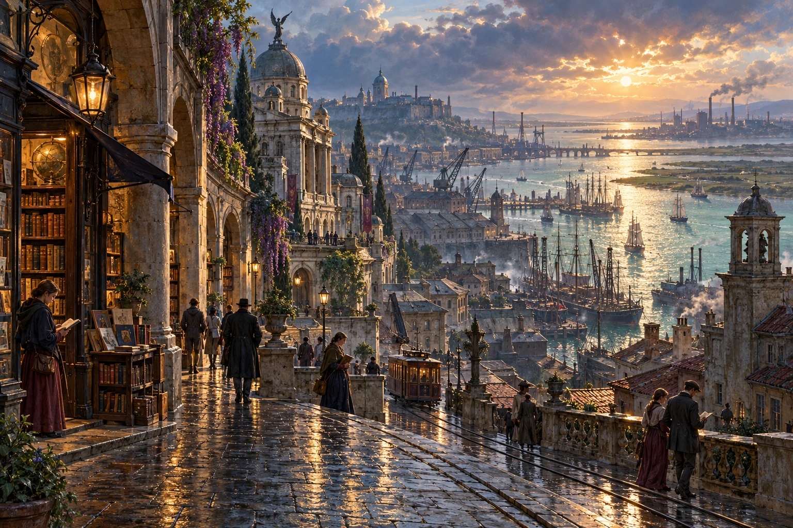
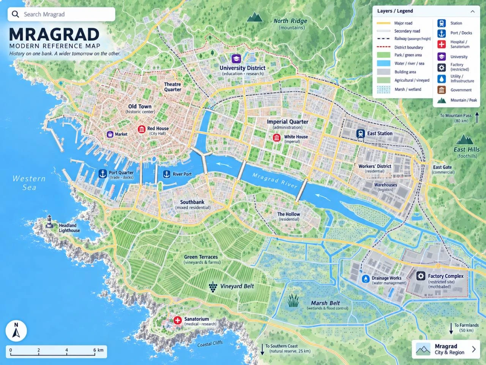

Fiction
Novels
in progress.
I'm writing Windreader, a fantasy novel, and Power of Words, an alternate-history science-fiction novel.
Windreader
A port city, its universities and the reach of an empire.

Teachers, students and researchers in the port city of Mragrad navigate imperial power, displacement and divided loyalties.
The story follows their teaching, research and relationships as they respond to the city's political conflicts.
- 13
- countries & regions
in the worldbuilding - 5
- working maps

Explore Mragrad ⤢Power of Words
Власть слов
Language and weather in an alternate 1970s.
An alternate late-Soviet world where the processing of language affects the atmosphere. A young researcher studies the connection inside a scientific institute shaped by political demands.
The story follows her work and relationships, from late conversations over tea to the political uses of the institute's research.
- 7
- acts in the plan
- ~328
- planned scenes
- 1974–78
- the story's setting